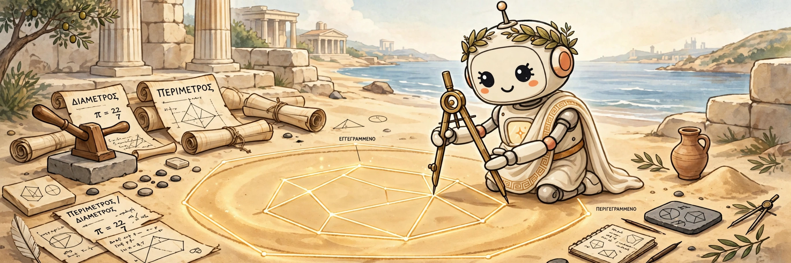

Archimedes AI — building a new sphere from sometimes square angles.

The geometry of the circle, in three panels. Trap π between two polygons the way Archimedes did. Subdivide an icosahedron into a sphere and watch Euler's formula hold at every step — then count the twelve pentagons that carry all the curvature. Finally, wrap a star two ways and see why the solid shell drifts into its sun while the swarm of flat panels just keeps orbiting. The 📖 Lesson button carries the fiction doorways — Dyson spheres, the Tholian Web, Spelljammer's crystal spheres — and the proofs.
Archimedes started from the hexagon and doubled: 6 → 12 → 24 → 48 → 96. The mint polygon sits inside the circle, the rose one outside. π is trapped between half of each perimeter. Every doubling cuts the gap by roughly a factor of four.
He had no decimals and no trig tables — every length was a fraction, and he rounded outward at each step so the trap never lied. His published squeeze: 223/71 < π < 22/7.
Drag the sphere to rotate it. Each flat triangle of the icosahedron is cut into ν² smaller ones and the new corners are pushed out onto the sphere. The shape gets rounder; the counts stay exact.
In the soccer-ball view the amber faces are the pentagons — count them. There are always twelve, however fine the mesh gets: all of the sphere's curvature lives in those twelve faces, 60° of angle defect each, 720° in all.
The shell theorem (Newton): inside a uniform spherical shell, gravity cancels exactly. A star exerts no net pull on a shell around it — so a nudged shell has no reason to come back. It drifts until it touches.
The swarm is what Dyson proposed in 1960: independent panels on their own orbits. There is no centre to lose. The light a swarm catches is simply the fraction of the sky it covers.
| Claim | Measured | Tolerance | Result |
|---|
These rows are runProofs()
executing in your browser against the exact core that draws the three panels above: the
Archimedes bounds computed from the same function the first panel draws, the sphere counts
taken from the built meshes (not the formulas — the formulas are what is being checked),
the pentagons counted face by face from the soccer ball's own geometry, and the Dyson
panel's drift and light bookkeeping stepped through the same simulation the third panel
animates. Full write-up on the lesson page.